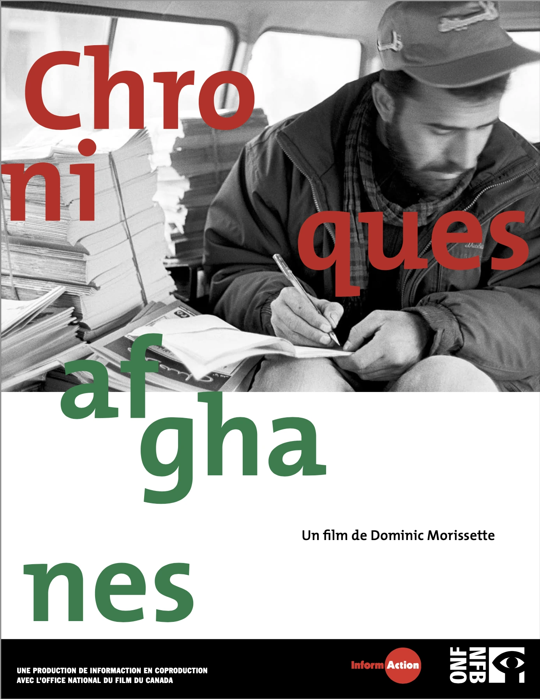
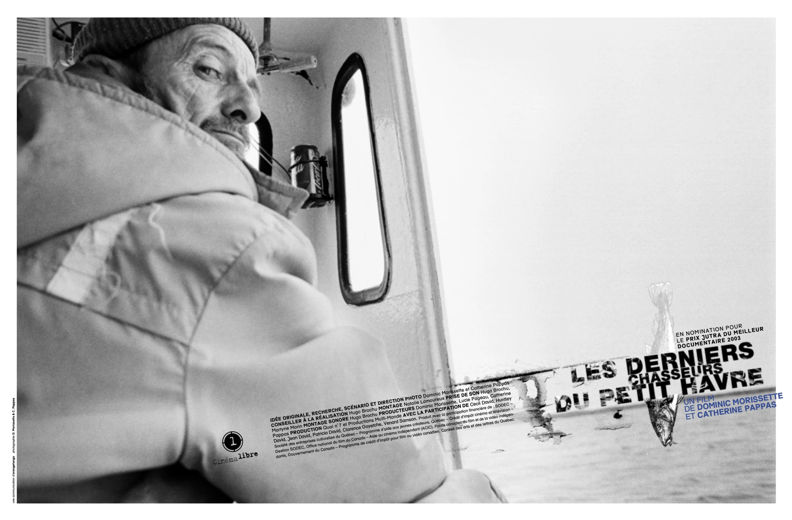
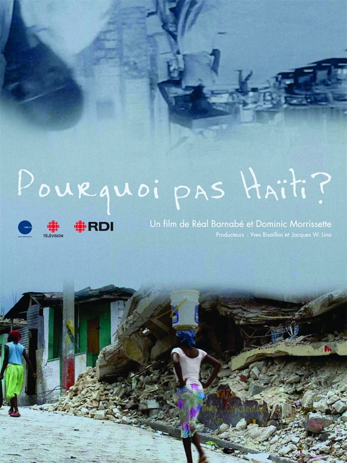

ONF
52 min
Chroniques afghanes
Réalisation et caméra

Chroniques afghanes Voir le filmDes images de terrain qui observent les personnes, les territoires et les réalités sociales. Chaque série cherche une présence juste, attentive et profondément ancrée dans le réel.
Des portraits naturels qui révèlent la personnalité, la présence et l'univers de chaque personne. La séance s'adapte au lieu, au métier et au rythme de la personne photographiée.
Une couverture attentive des rassemblements, célébrations et rencontres professionnelles. Les images retiennent les gestes spontanés, les personnes et l'atmosphère qui donnent sa couleur au moment.
Des films courts, portraits et récits de terrain pensés pour restituer une voix, un rythme et une atmosphère.
Des films réalisés au plus près des personnes et des territoires. Chaque projet est présenté sur la plateforme qui l'héberge.
Réalisation et caméra

Chroniques afghanes Voir le filmRéalisation et caméra

Les derniers chasseurs du petit havre Voir le filmRéalisation et caméra

Pourquoi pas Haïti? Voir la bande-annonceRéalisation, caméra et montage
 CECI urgence Haïti
Voir la capsule
CECI urgence Haïti
Voir la capsule

Photographe et vidéaste, Dominic Morissette développe une pratique centrée sur l'humain, le territoire et les histoires qui façonnent notre quotidien. Son approche conjugue sensibilité documentaire, maîtrise technique et attention portée aux détails. À travers chaque mandat, il cherche à créer des images authentiques, évocatrices et profondément ancrées dans le réel.